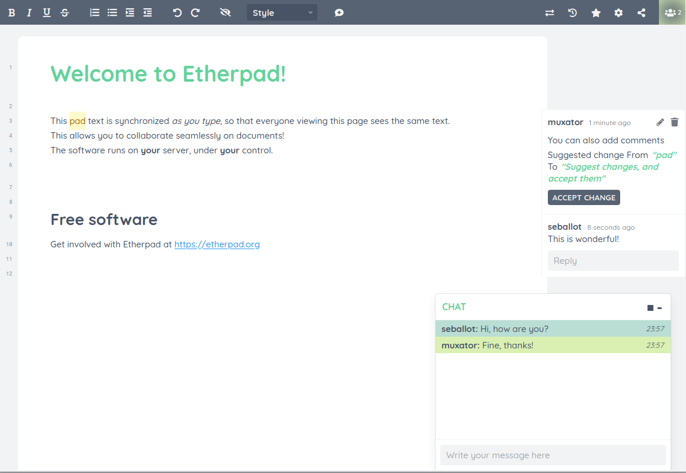

Dicotomía Epistemológica: Modelo Cooperativo vs. Colaborativo
Contraste conceptual basado en las investigaciones de Johnson & Johnson (1999) y Dillenbourg (1999). Explore las pestañas comparativas y examine la fotografía auténtica.
Diseñado e instruido previamente por el docente tutor. Se desglosan actividades concretas, se delimitan los tiempos y se entrega una pauta rigurosa que condiciona el flujo de trabajo.
Emerge de la negociación espontánea entre los participantes. El grupo define colectivamente sus metas intermedias, la estrategia de resolución de problemas y la distribución de tareas.
Roles nominales fijos y complementarios: facilitador de recursos, registrador de acuerdos, verificador de calidad y mediador de tiempos. Cada rol es evaluable por separado.
Simetría de estatus y liderazgo distribuido rotativo. Los participantes alternan roles de acuerdo con sus competencias situacionales, sin que exista una jerarquía preconfigurada.
Esquema de ponderación dual: se califica el producto final entregado por el equipo y se valida el dominio conceptual de cada alumno mediante evaluaciones formativas individuales.
Evaluación formativa centrada en el proceso de coconstrucción social. Se valoran la calidad argumentativa en los foros, la capacidad de refutación y la metacognición grupal.

Organización de Actividades: Metodología Ágil y Tableros Kanban
Transformación de programas de estudio extensos en microtareas gestionables con responsables y plazos claros.
Uno de los principales factores de deserción y fricción en equipos virtuales es la falta de claridad en las responsabilidades. Los tableros Kanban convierten las instrucciones abstractas en tarjetas dinámicas observables por todos.
- Por Hacer (Backlog): Repositorio de lecturas, síntesis y entregables pendientes.
- En Progreso (WIP): Tareas que se están desarrollando activamente en el sprint actual.
- En Revisión: Productos sometidos a la crítica de pares o a la corrección de la tutora.
- Completado (Done): Entregables validados que alimentan la memoria del curso.
Asana & Monday: Diagramas de Gantt y dependencias automatizadas entre tareas.
Jira: Gestión avanzada de sprints con cálculo de velocidad de entrega.

Desempeño Individual: Trazabilidad, Coautoría y Control Antipolizón
Alterne entre Google Docs y Etherpad para examinar el registro de auditoría cromática y control de versiones.
En la educación tradicional, el trabajo en grupo a menudo propicia el “efecto polizón” (free-riding), donde uno o dos integrantes asumen toda la carga mientras otros obtienen la calificación de manera pasiva.
Las aplicaciones telemáticas resuelven esta problemática mediante auditorías cromáticas precisas: cada carácter escrito, modificado o suprimido queda registrado con fecha, hora y usuario responsable.
Etherpad: Editor colaborativo de código abierto con identificación cromática por autor.
Overleaf / Git: Control de cambios estricto para artículos académicos en LaTeX y repositorios.


Desempeño en Equipo: Canales Temáticos, Hilos y Memoria Grupal
Superación de la mensajería instantánea caótica mediante espacios de diálogo asíncronos estructurados.
Los grupos de mensajería social generan sobrecarga de información y pérdida constante de acuerdos. Las plataformas telemáticas de equipo ofrecen una estructura basada en canales específicos de indagación:
- Canales Temáticos: División de temas (#bibliografia, #redaccion, #dudas-tutora).
- Hilos de Discusión: Respuestas anidadas que impiden la fragmentación del debate.
- Memoria Indexada: Búsqueda instantánea de archivos, hipervínculos y decisiones anteriores.
Slack: Referente en flujos de trabajo telemáticos con bots y recordatorios automáticos.
Microsoft Teams: Integración total con suites ofimáticas y aulas virtuales educativas.

Ideación Colectiva y Muros Virtuales de Conocimiento
Construcción social del conocimiento (Scardamalia & Bereiter, 2006) mediante cartografías conceptuales sincrónicas.
La creación de mapas mentales y murales conceptuales colectivos traslada el aprendizaje de la memorización pasiva hacia la articulación espacial de ideas. Los estudiantes identifican patrones, jerarquías y vacíos conceptuales en tiempo real.
- Lluvia de ideas estructurada: Notas adhesivas virtuales agrupadas por categorías.
- Votación democrática de propuestas: Mecanismos de selección rápida de alternativas.
- Interconexión de constructos: Flechas de relación causal entre autores estudiados.
Padlet: Muro de evidencias multimedia accesible desde cualquier navegador.
Coggle: Mapas conceptuales colaborativos con ramificaciones semánticas automáticas.